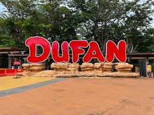

Proyek Dunia Fantasi dicanangkan pada awal tahun 1980 dimana pada saat itu Taman Impian Jaya Ancol masih dibawah kepemimpinan bapak Handogo Soekarno yang menjabat sebagai kepala divisi promosi Taman Impian Jaya Ancol. Pada saat itu, Handogo memberikan mandat kepada Benny Benhardi untuk membuat ilustrasi menggunakan Birds Eye View. Pengerjaan ini dibuat di kantor Arsitektur Balai Samudra dibawah arahan Bapak Sutisna dan arsitek senior Budi Priambodo serta beberapa juru gambar. Dunia Fantasi mempunyai beberapa maskot yang salah satunya berupa kera bekantan yang diberi nama Dufan (singkatan dari Dunia Fantasi). Dipilihnya kera sebagai karakter adalah untuk mengingatkan bahwa Ancol dahulu adalah kawasan Kera. Sedangkan pemilihan kera bekantan adalah semata-mata untuk mengenalkan jenis satwa langka yang kini dilindungi. Pada awalnya, Bentuk karikatural kera bekantan ini divisualisasikan oleh Matari Advertising yang ikut serta dalam program komunikasi awal Dunia Fantasi karena pada saat itu, Agustinus Teddy Darmanto selaku ketua sekaligus penanggung jawab BenDufa (Bengkel Dunia Fantasi) sangat sibuk dalam tahap penyelesaian akhir. Oleh karena itu, pengvisualisasian diberikan pada Matari Advertising. Namun setelah Dunia Fantasi dibuka untuk umum, visualisasi karakter Dufan diambil alih kembali oleh tim BenDufa dan kemudian terciptalah logo beserta karakter-karakter Dunia Fantasi.